When Spotify raised Premium from \$10.99 to \$11.99, how much of that extra dollar did it keep? This chapter answers with a single equation — \(MR = MC\) — and turns it into a number you can read off any price tag.
Dr. Richeng Piao
Department of Economics
Northeastern University
Learning Objectives
By the end of class today, you will be able to…
11.1
Derive marginal revenue from inverse demand and explain why \(MR < P\) for any price-maker.
11.2
Solve the monopolist's price and quantity from \(MR = MC\) end-to-end on a linear-demand example.
11.3
Compute the Lerner index and connect markup to elasticity: \((P-MC)/P = -1/\varepsilon_D\). (central result)
11.4
Quantify the deadweight loss of monopoly as the Harberger triangle \(\tfrac12(P_M-MC)(Q_C-Q_M)\).
11.5
Analyze natural monopoly (subadditive cost) and evaluate price-cap and average-cost regulation.
From Price-Taker to Price-Maker
Ch 10 — perfect competition
Firm is a price-taker: \(\partial p/\partial q_i = 0\)
\(MR = p\), so profit-max sets \(p = MC\)
Free entry → \(p = \min ATC\), \(\pi = 0\)
Welfare theorem holds: \(Q^*\) maximizes total surplus
Ch 11 — monopoly
Firm is a price-maker: \(\partial p/\partial q < 0\)
\(MR < p\), so profit-max sets \(MR = MC\)
Price sits above \(MC\) — the markup
Welfare theorem fails: \(Q_M < Q_C\), deadweight loss returns
One assumption changes everything. A monopolist faces the entire market demand curve, so selling one more unit forces the price down on every unit it sells. That single fact — \(\partial p/\partial q < 0\) — generates marginal revenue below price, a positive markup, and the deadweight loss §10.9 previewed when one chain bought every burger shop — only now it is the starting point.
Why Does Spotify Charge \$11.99?
June 3, 2024: Spotify raises US Premium Individual from \$10.99 to \$11.99 — its first big US hike since 2018. By the end of 2025 it had 290M Premium subscribers and a 34.8% Premium gross margin. In early 2026 it raised the price again, to \$12.99.
Spotify is not a price-taker. Apple Music has ~⅓ its subscribers; Amazon, YouTube Music, Tidal are smaller still. When Spotify raises its price, the price of Spotify Premium rises — some subscribers churn, most stay.
The committee's question wasn't which direction — you already know that. It was how much: does the extra revenue from retained dollars beat the revenue lost to churn? The answer is a single equation: \(MR = MC\).
\$11.99
US Premium Individual (2024 hike)
290M
Premium subscribers, Q4 2025
\$8.40
Royalties to rights holders: \(MC\) = 0.70 × \(P\)
−3.33
Implied demand elasticity \(\varepsilon_D\)
These four numbers — \((P, N, MC, \varepsilon_D) = (\$11.99,\ 290\text{M},\ \$8.40,\ -3.33)\) — are locked for the rest of Part IV. Chapters 12, 13, and 14 inherit them verbatim.
The Electricity Market — Monopoly
One set of wires to your home — and no second supplier to call.
1. One firm — a single utility owns the wires to your home; you can’t shop the grid. ● one seller
2. No substitutes — grid power is unique; no rival’s electrons reach your outlet. ✗ unique
3. Insurmountable barriers — a second parallel grid is absurdly costly (a natural monopoly) — plus a regulatory franchise. ✗ blocked
4. Price-maker — the utility would set the price, so a public utility commission caps the rate instead. $ rate-regulated
5. Profit can persist — barriers protect it; regulators allow a “fair return.” ● sustained
Monopoly — one seller, no substitutes → price-maker (max power, tamed by regulation) · Ch 11
Is LEGO a Monopoly?
LEGO’s brick patents expired years ago — yet brand, precision, and a huge ecosystem keep real rivals tiny. The textbook’s go-to monopoly example.
Setting the Bar — Barriers to Entry
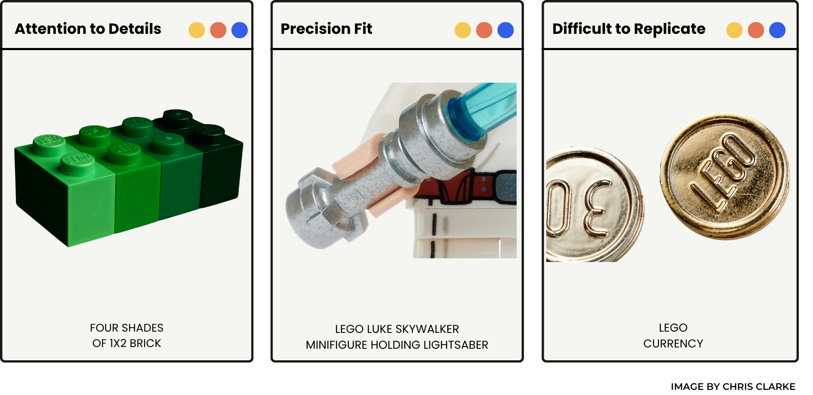
Micron-level precision, a massive parts catalog, and exclusive licensing (Star Wars, Marvel) make LEGO expensive and hard to replicate — high barriers that protect its market power and let profit persist.
No Close Substitutes
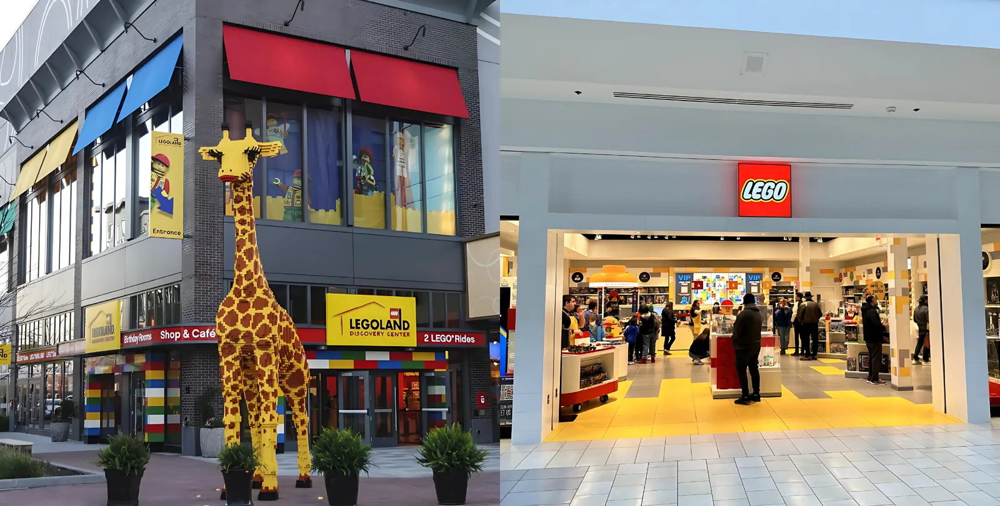
Knockoffs exist — but none match LEGO’s clutch power, quality, ecosystem, and brand. Buyers don’t see a real substitute. A unique product with no close substitutes is the defining monopoly trait.
Barriers to Entry — the Moat
Barriers to entry — obstacles that keep new firms out, letting incumbents sustain economic profit in the long run.
20th century
Physical moats — railroads, oil wells, steel mills. Barriers made of capital.
21st century
Digital moats — software ecosystems, data, network effects. Lock in billions at near-zero marginal cost.
Market Failure #1 — Market Power
When a seller faces no real competition, price floats free of cost.
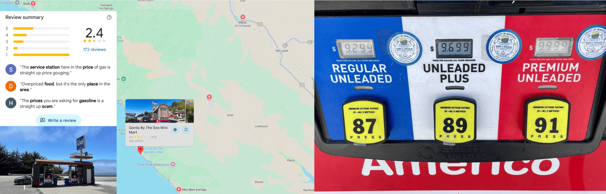
Gorda, CA — one gas station on a remote stretch of Highway 1. Regular: $9.30/gal, ~$2 above stations down the coast.
No rival station for miles — so the seller is not a price taker. It restricts what's available and sets price far above cost. Reviews call it "straight up price gouging"; economists call it market power.
It doesn't take a remote road.DOJ v. RealPage (2025): landlords fed private data into a shared pricing algorithm that recommended coordinated rent hikes — a "technological cartel," collusion without anyone meeting in a conference room.
Either way, price is pushed above the competitive level. Willing buyers get priced out, surplus-creating trades never happen — and that gap is the deadweight loss. Full treatment: Chapter 11.
What Is Market Power? — The Google Case
Search, YouTube, Maps, Gmail, Android, Chrome — one firm, the whole ecosystem.
Market power — the ability to have some control over the price. A price-taker (Ch 10) has none; Google has a lot.
In 2021, Google’s market value was nearly $2 trillion.
It sells advertising worldwide — companies pay to show up more prominently in search results.
Some advertisers pay over $50 per click; the average is closer to $11.
Barriers to entry are the key to the market power of monopolies.
When Market Power Draws a Lawsuit
January 2023: the U.S. Department of Justice sued Google for monopolizing digital advertising technologies.
That’s Google’s ad-auction business — the engine behind a near-$2-trillion company.
Having market power is legal. Abusing it to lock out rivals is what antitrust targets.
Same rule as every antitrust case in this chapter: having market power is legal; abusing it is not.
Market Power, Made Formal
Chapter 9's gigafactory faced a flat residual demand: it could sell 50 GWh or 100 at the going \$84/kWh. A monopolist cannot. Spotify is the only seller of Spotify Premium, so it faces the entire market demand curve:
A one-unit increase in output lowers the price the firm can charge on all its units. Selling more requires charging less; charging more means selling less. The two choices are duals — pick \(q\), read \(P\) off demand.
What market power lets the firm do: charge above marginal cost. A price-taker who set \(p > MC\) would lose every sale to a rival at \(p = MC\). A monopolist, with no rival to undercut it, sustains the wedge:
markup \(= P - MC > 0\)
That wedge is what the welfare theorem cares about. Ch 10's equilibrium was efficient because \(p = MC\). Any wedge between consumer benefit and producer cost generates deadweight loss — the rest of Part IV.
A subtle point: Spotify is not literally the only music platform. But it is large and differentiated enough that its residual demand — what's left after consumers choose between it and substitutes — still slopes down. The "monopoly" treatment is an approximation; Chapter 13 refines it with explicit rivals.
Five Sources of Monopoly Power
Most real monopolies combine several — but each starts here.
1. Control of a key input. Own a resource rivals can’t replicate — ore, land… or software.
2. Switching costs & network effects. The cost of leaving — and the pull of where everyone already is.
3. Product differentiation & branding. Make consumers see your product as one of a kind.
4. Economies of scale & natural monopoly. One firm serves the whole market more cheaply than two.
5. Government-created monopoly. Patents, franchises, licenses — the state grants exclusivity.
1 · Control of a Key Input
Physical — rubber, 1900s
Britain moved rubber trees to blight-free Asian plantations. When Ford tried to copy it — “Fordlandia,” 1927 — Amazon leaf blight destroyed it. The barrier was biological.
Digital — Nvidia, 2020s
~86% of AI accelerator chips. But the moat is CUDA — 20 years & 4M+ developers built on it. Rewriting that code costs years.
The H100 GPU costs ~$3,320 to make and sells for ~$28,000 — an 88% gross margin that only an extreme switching cost can defend.
The input that matters is no longer the silicon — it’s the software ecosystem locked on top of it.
Deep Dive — Fordlandia & the Rubber Monopoly
Fordlandia today — Ford’s plantation town, reclaimed by the jungle.
Latex tapped from the rubber tree — the input Britain controlled.
The barrier: Britain moved rubber-tree seeds to blight-free plantations in Asia, cornering global supply — a monopoly on the key input.
Why Ford failed: in the tree’s native Amazon, leaf blight raced between close-planted trees and destroyed Fordlandia. The barrier was biological.
Same logic, a century later: control the input rivals can’t replicate — rubber then, CUDA now.
Control Over the Key Factor of Production — AI Chips
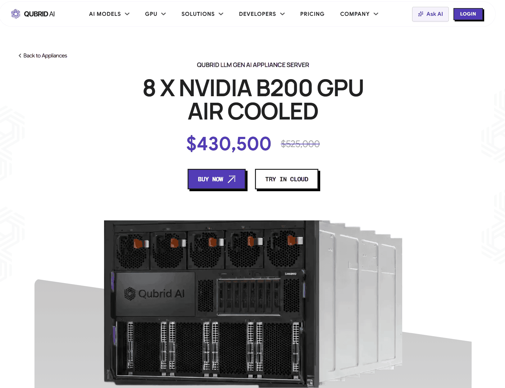
One 8×B200 server: $430,500 — the physical silicon.
In the AI era, the critical input isn’t crude oil — it’s specialized semiconductor hardware.
NVIDIA 80–90%
AMD 5–8%
Share of the global AI accelerator chip market
$130B+ in data-center revenue in 2025 alone. Rivals are left scrambling for single-digit share.
The question: why can’t a rival just engineer a faster chip and steal the market back?
The Razor and the Razor Blade
The chip is the razor. The software is the razor blade — and that’s where the lock-in lives.
Above the surface — the Razor
Physical silicon (H100 / Blackwell GPUs). Interchangeable, bound by physics — a rival can match it.
Below the surface — the Razor Blade
CUDA software platform — the proprietary translation layer between developer code and the physical math of the chip.
While rivals chased silicon physics, Nvidia made CUDA the definitive programming language of global deep-learning research and enterprise deployment.
Control of a Key Input → Strategic Location
Modern example: Starbucks’ location strategy.
The key input: Starbucks secures prime real estate in high-traffic spots — busy corners, campuses, transit hubs.
Location premium: a Starbucks by Tufts Medical Center charges $3.65 for brewed coffee vs $2.95 at a store farther away.
The “third place”: comfy seats + Wi-Fi turn shops into destinations — so it can charge more, reinforcing market power through location control.
The Premium Spot — Starbucks at Tufts Medical Center
High-traffic location by the medical center.
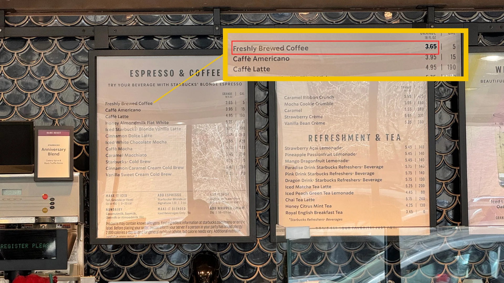
Freshly Brewed Coffee: $3.65
Prime, high-traffic real estate → $3.65 for a basic brewed coffee. The captive foot traffic is the barrier.
Three Miles Away — Same Coffee, $2.95
A store farther from the foot-traffic hub.
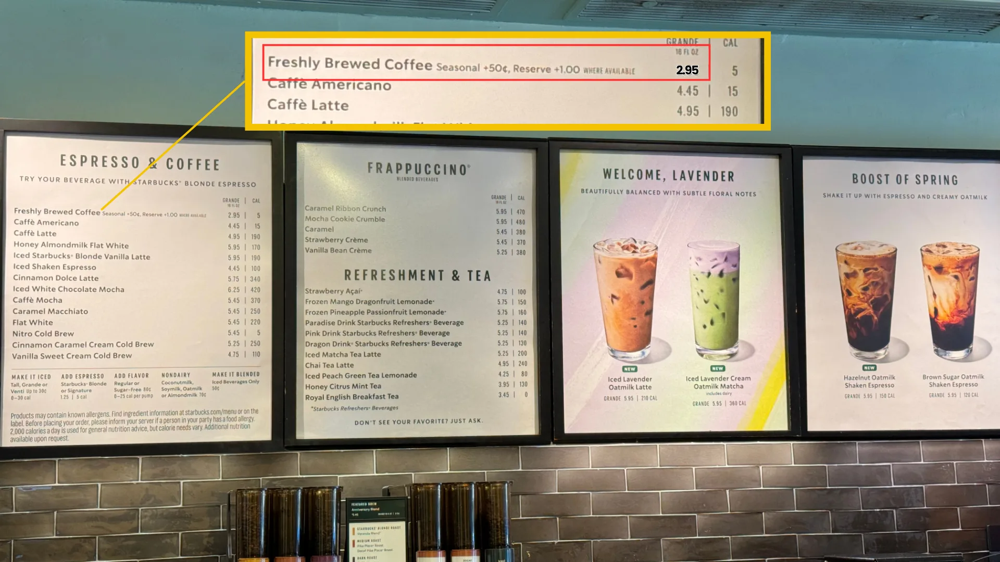
Freshly Brewed Coffee: $2.95
Same coffee, $0.70 cheaper. Captive foot traffic makes demand at Tufts less elastic, so the markup is higher. How much of the 70¢ the landlord takes back in rent is Chapter 10’s question.
2 · Switching Costs & Network Effects
Switching cost — what you pay in money, time, or lost data to leave. Years of apps, an Apple Watch, iMessage, the blue bubble … ~58–60% of US users stay on iPhone, so Apple charges a 15–30% App Store cut.
Network effect — the product is worth more as more people use it. Consoles, social media, messaging → the market tips toward one platform, with no patent or grant required.
Network Good with Switching Costs
Your first console pulls in the next one.
Your first console → your friends on the same platform → your next console on the same platform.
Network good: a good whose value to each customer rises with the number of other people who use it.
Other examples: your first pharmacy, your first bank, your first credit card — each gets stickier as more people are on it.
Two-Sided Market with Switching Costs
An app store: two sides, one platform.
End users
App developers
App / game stores connect two sides — end users and developers — on one platform.
High switching costs make it hard to leave after you’ve bought apps — your library doesn’t come with you.
Contract Switching Costs
Switching costs occur when customers must give something up to switch to a competing product — here, a cash penalty for leaving early.
Carrier
Smartphone fee
Basic phone fee
AT&T
$325
$175
Sprint
$350
$200
Verizon
$350
$175
Early-termination fees (ETFs, 2010s contracts) for leaving a phone contract before it ends.
The fee depends on
your contract terms & proration
the time remaining
the device you bought
A deliberate barrier to leaving — even when a rival is cheaper.
iPhone and Its Ecosystem
Market power
Millennials are the largest share of US iPhone users; Gen Z 61% and teens 82% adoption.
Usage & spending
89 interactions/day, 5.6 hrs/day; ~$154/yr on apps & subscriptions.
Dominance
The iPhone holds over 58% of the US smartphone market — the deeper the ecosystem, the higher the switching cost.
DOJ Sues Apple — Monopolizing Smartphone Markets
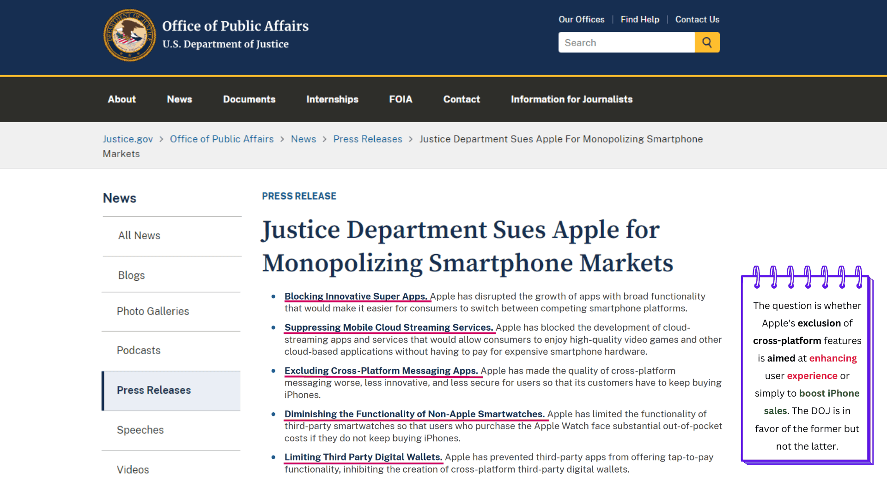
The DOJ’s 2024 case lists five exclusionary tactics — blocking super-apps, suppressing cloud gaming, degrading cross-platform messaging, hobbling non-Apple watches, and limiting third-party wallets.
The real question: is Apple’s exclusion of cross-platform features enhancing user experience, or just boosting iPhone sales? The DOJ argues the latter.
Class Vote — Better Experience, or Better Upsell?
Take the five DOJ tactics at face value. Apple’s story: it is integration — the same bundle of devices simply works better together, so buyers get more value per dollar and consumer surplus rises.The DOJ’s story: it is exclusion — friction engineered to make the iPhone the only tolerable choice, so the surplus moves to Apple. Which is it?
A) Efficiency — integration really does raise the value of the same bundle → CS rises
B) Upsell — the friction exists to sell iPhones → CS falls, surplus shifts to Apple
C) Both — the quality gain is real, but Apple keeps it exclusive on purpose
D) Depends on the switching cost — harmless while leaving is cheap, harmful once you’re locked in
60 sec to vote
The Vote — and How an Economist Settles It
If it’s efficiency (A)
The same hardware bundle is worth more to you — willingness to pay rises, demand shifts out, and consumer surplus and total surplus both rise. That is a real efficiency gain, and antitrust law counts it as a legitimate business justification.
If it’s upsell (B)
No new value is created. The friction raises your switching cost, your demand turns less elastic, and by the Lerner rule Apple’s markup rises — a transfer out of CS, plus the DWL of every cross-platform trade that never happens.
The deciding question is the less-restrictive-alternative test: could Apple deliver the same integration benefit without degrading rivals? If yes, the exclusion is doing the work, not the engineering.
Hold that test. The next slide is a case you can run it on — a customer asks Tim Cook why he can’t send his mum a video. Listen to whether the answer is “we can’t” or “buy a different phone.”
“Buy Your Mum an iPhone”
The customer was asking why the video is broken. Cook doesn’t answer the question — he answers with a purchase.
Run the test. The answer was never “we can’t” — and in iOS 18 Apple shipped RCS, fixing the cross-platform photo and video quality it had left broken for a decade. Under regulatory pressure, not new engineering.
The other side. Cross-platform encryption was a real technical constraint — unlike video compression. Which is the point: the parts Apple couldn’t easily do and the parts it wouldn’t are separable.
AirTags, Tile, and the Senate Hearing
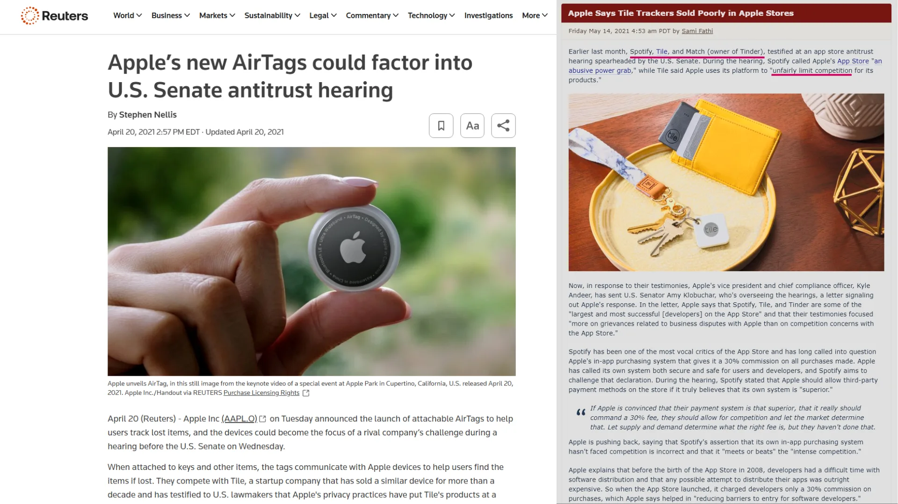
Apple launched AirTags the same week a Senate antitrust hearing took up Tile — a third-party tracker Apple now competes against.
Tile testified Apple “unfairly limits competition.” The platform owner can quietly hobble rivals it also sells against — self-preferencing is the heart of the case.
Barriers to Switch — the Walled Garden
“It’s fine to build a beautiful garden for users to enjoy — but a company should also leave a window to the outside world, because there may be a better view beyond the wall. If the firm keeps the door open, it will greatly increase consumer surplus.”
3 · Product Differentiation & Branding
Make the product feel unique — and competition softens into pricing power.
Tesla
Early self-driving lead + a proprietary Supercharger network legacy automakers couldn’t match.
Red Bull
Extreme-sports identity so strong rivals can’t enter — despite trivially low production cost.
Rolex · Mercedes
Decades of brand image → prices far above production cost, sustained by perception alone.
Apply Differentiation is the weakest barrier — it’s the whole story of Chapter 13 (monopolistic competition), where rivals can enter with their own twist. Here it’s one ingredient in a bigger moat.
Innovation → Product Differentiation
Tesla Autopilot — self-driving as the differentiator.
Tesla Autopilot: driver-assistance software that rivals scramble to match.
Product differentiation: a product with no close substitute lets a firm command premium prices.
No close substitute for the experience → a higher price. Full Self-Driving (Supervised) costs $99 a month on top of the car (US); until Feb 2026 it sold for $8,000 up front.
Example: Tesla Supercharger
The Supercharger network.
Economies of scale: like a natural monopoly, ATC keeps falling as the network is used more.
One network, three reinforcing moats: prime charging locations (a key input), a network you lose if you leave Tesla (switching costs), and economies of scale (more charges, lower ATC). The sources of monopoly power rarely come alone.
Marketing → Product Differentiation
Red Bull’s extreme-sports spectacles. (Click to open on YouTube.)
Strong brand identity: Red Bull’s positioning makes it hard for rivals to enter — despite a near-zero production cost.
The entire price premium is brand, not the liquid in the can.
4 · Economies of Scale & Natural Monopoly
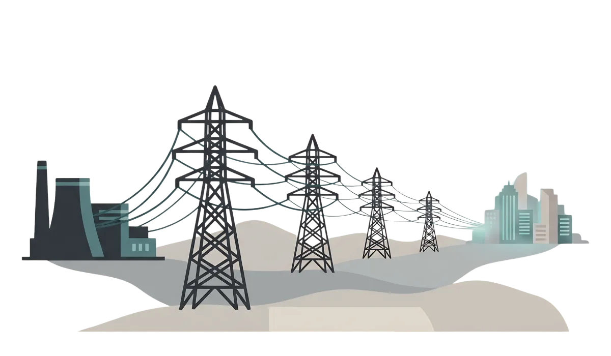
Natural monopoly — one firm can supply the whole market at lower average cost than two could. Arises with very high fixed cost + very low marginal cost.
Electric grid. ~$21.9B/yr US fixed cost; the cost of one more kWh is tiny. Two competing grids = both charge more.
Starlink. ~$10B+ sunk, 8,300+ satellites, 10M+ subscribers (2026). One more subscriber ≈ the cost of mailing a dish. A rival must rebuild the whole constellation.
Example: Electricity Transmission
US utilities spend about $21.9B a year on transmission. One network can serve all of Boston’s 279,495 homes.
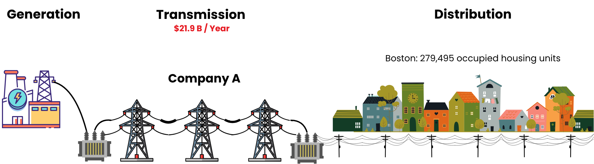
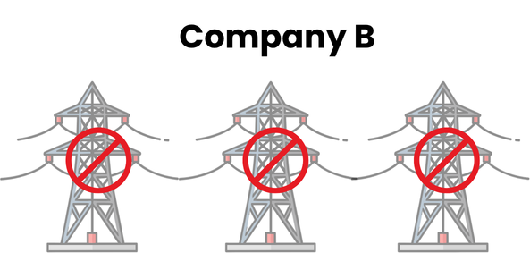
A second network would duplicate that cost for half the customers → both firms’ ATC rises. One firm is cheaper: a natural monopoly.
5 · Government-Created Monopoly
The state grants exclusivity: USPS first-class mail, water franchises, NYC taxi medallions (once >$1M before Uber).
Patents (20 years) and copyrights (the author’s life + 70 years) are the big ones: an exclusive window to recoup R&D. Without them, rivals copy on day one and free-ride.
One drug, one patent — Ozempic / month
United States
$969
Germany
$59
India (no patent)
$14
Manufacturing cost
< $5
Same molecule, same factory: US vs India ($969 vs $14) is the patent; US vs Germany ($969 vs $59) is how each country bargains over price. We’ll quantify it with the Lerner Index at the end.
Government Franchise — Postal Services
The USPS holds an exclusive franchise for delivering regular first-class mail to your mailbox.
That exclusivity contrasts with packages & expedited mail, where FedEx and UPS compete freely.
Government IP — Copyright
Rick & Morty (created by Dan Harmon & Justin Roiland): the copyright belongs to Warner Bros. Discovery’s Adult Swim, which earns a licence fee every time an episode airs or streams.
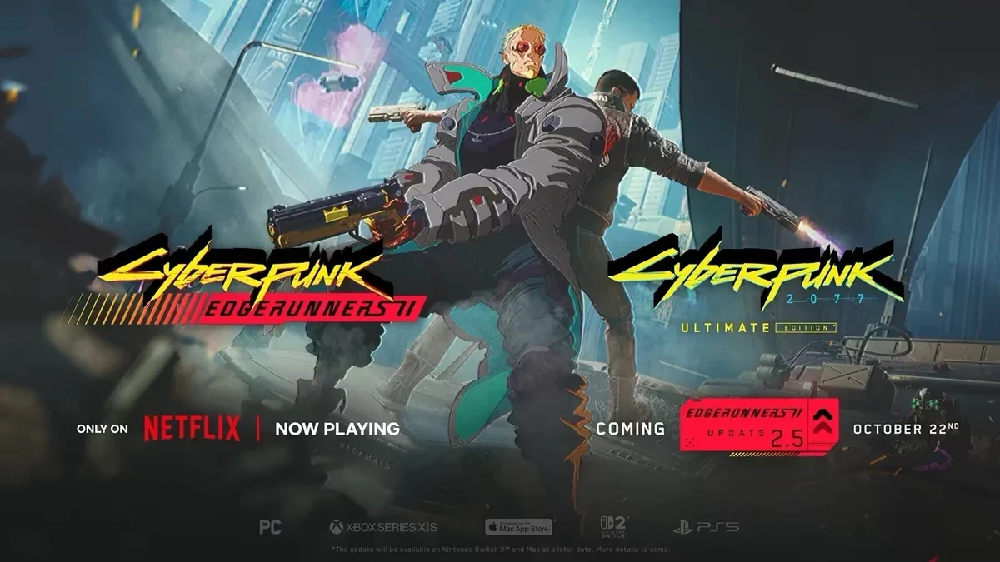
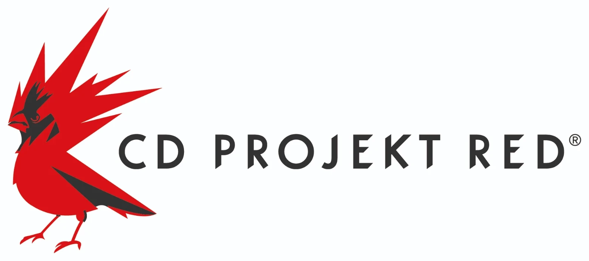
CD Projekt Red owns Cyberpunk’s world and characters: the game and Netflix’s Edgerunners anime both need its permission.
A copyright protects creative work — books, music, art, games, software code — so only the owner can sell it or license it, and creators benefit from their work.
Government IP — Patents
Patents give inventors of new products or processes legal protection for a limited period — usually 20 years.
Vital in pharma, tech, and auto manufacturing — the patent window is what makes huge R&D bets worth taking.
Beyond Patents — Trade Secrets
Coca-Cola’s formula — the classic trade secret.
A trade secret gives a competitive edge because the information isn’t publicly known — and it can outlast a 20-year patent.
Not registered with any government agency — protection relies entirely on keeping it confidential.
Licensing & Government Regulation
NYC taxi medallions — a license that capped the number of cabs.
Governments restrict entry through licenses — a NYC taxi medallion once cost over $1M before Uber broke the cap.
When the state grants a monopoly, it usually also regulates the price (utility commissions) — the trade-off for blocking competition.
One island, one airline — sell 50 seats only by dropping the fare to $200.
The monopolist’s demand curve slopes downward: to sell more, it must cut the price (unlike Ch 10’s flat price-taker demand).
A monopolist faces the market demand curve — it is the sole producer, so market demand = the firm’s demand.
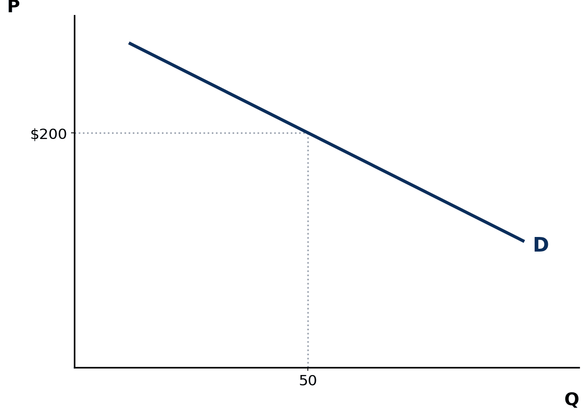
What Price to Charge? Test the Fare
Background. The only airline to the island first surveys travelers: each group of 10 says the most it would pay for a seat, $344, $308 or $272 (the bubbles below). Then it does what no price-taker can: post a fare, count the bookings, try another. A group books only when the fare is at or below what it said.
Marginal cost = $56 / seatLaw of demand: ↑P → ↓Qd
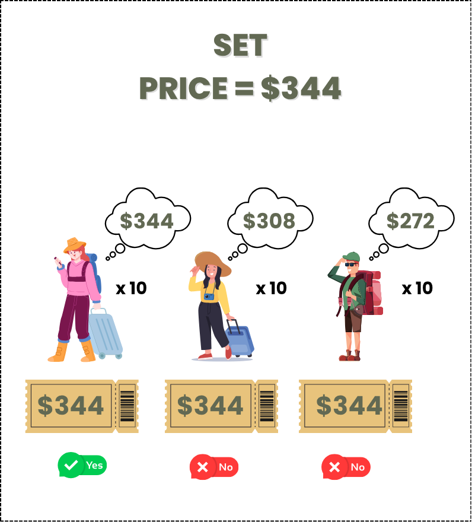
Week 1: $344 → 10 seats revenue $3,440
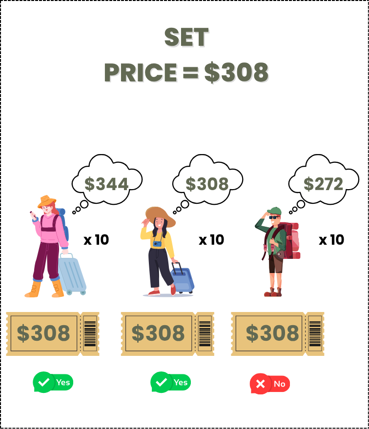
Week 2: $308 → 20 seats revenue $6,160
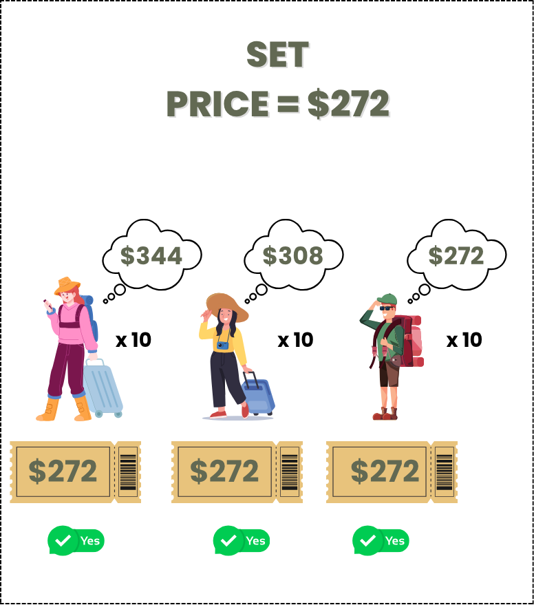
Week 3: $272 → 30 seats revenue $8,160
Every $36 off the fare sells 10 more seats. Connect the dots: that line is demand.
The catch. Cutting $344 → $308 sells 10 new seats (+$3,080) but every seat now goes for $36 less, including the 10 that sold at $344 (−$360). Net +$2,720 = $272 a seat, less than the $308 fare. That gap is MR < P.
One Fare Cut, Two Effects
The airline is selling 40 seats at $236. To sell 10 more it must cut the fare for everyone to $200. MC = $56 a seat.
The cut: $236 → $200 sells 40 → 50 seats.
Quantity effect (+): 10 new seats × $200 = +$2,000
Price effect (−): the 40 seats that sold at $236 now sell for $36 less: 40 × $36 = −$1,440
Net: $2,000 − $1,440 = $560 for 10 seats = $56 a seat. That is MR: below the $200 fare, and equal to MC = $56, so stop at 50.
Q
P
TR = P × Q
MR (per seat)
MC
30
$272
$8,160
$200
$56
40
$236
$9,440
$128
$56
50
$200
$10,000
$56
$56
60
$164
$9,840
−$16
$56
Seeing It on the Graph — MR Below Price
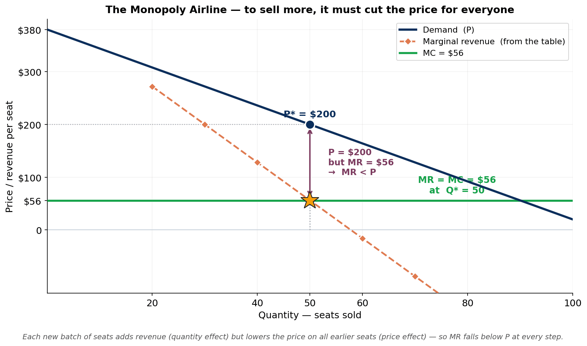
Demand slopes down. The MR ledger (orange) falls twice as fast and ends far below price.
In the ledger, the 40→50 block adds $56 a seat = MC (gold star). Read the fare up on demand: $200 at 50 seats. Exact optimum (slide 26.2): 45 seats at $218.
The gap is the point: P = $200 while MR = $56. Never read price off the MR curve.
One Fare Cut, Two Effects: Why MR < P
The airline is selling 40 seats at $236. By the law of demand, to sell 10 more it must cut the fare for everyone to $200. MC = $56 a seat.
The cut: $236 → $200 sells 40 → 50 seats.
Quantity effect (+): 10 new seats × $200 = +$2,000
Price effect (−): the 40 seats that sold at $236 now sell for $36 less: −$1,440
Net $2,000 − $1,440 = $560 for 10 seats = $56 a seat = MR: below the $200 fare, equal to MC, so stop at 50.
The $36 cut per 10 seats is the slope of demand \(P = 380 - 3.6q\): \(P'(q) = -3.6\) a seat. So the price effect is always negative and MR lies under demand. At 45 seats: $218 − 45 × 3.6 = $56 = MC.
Walkthrough 11.1 (Part 1) — Fluff: TR, AR and MR
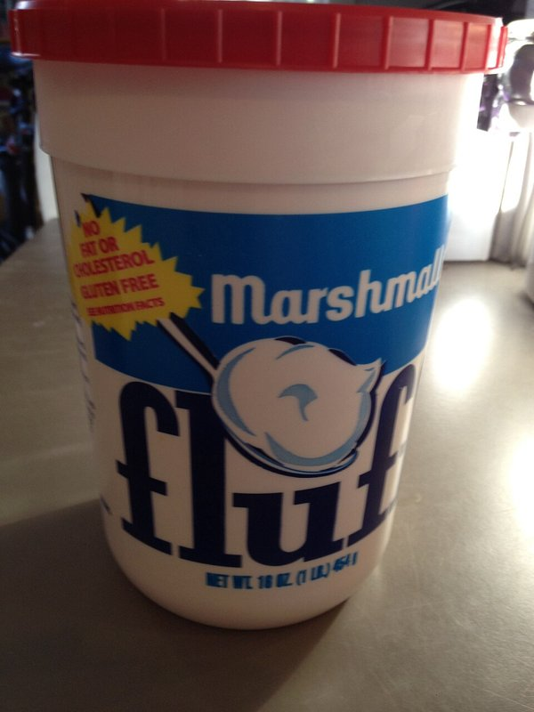
Background. Marshmallow Fluff has been made in Lynn, Massachusetts, by Durkee-Mower since 1920 (the "fluff" in a fluffernutter). Treat its maker as the only seller: to sell more jars it must lower the price. Market demand is \(Q = 200 - 40P\) thousand jars a week, so the inverse demand is \(P = 5 - 0.025Q\). Problem. (1) Total revenue? (2) Where is TR largest? (3) Average revenue? (4) Marginal revenue? (5) \(AR\) and \(MR\) at \(Q = 50\)K jars?Photo: Scout123mh, CC BY-SA 3.0, Wikimedia Commons
1. Total revenue: \(TR = P \cdot Q = (5 - 0.025Q)\,Q = 5Q - 0.025Q^2\).
2. Where is TR largest? \(5 - 0.05Q = 0\): \(Q = 100\)K at \$2.50, \(TR = \$250\)K.
3. Average revenue: \(AR = TR/Q = 5 - 0.025Q\): AR is the price.
4. Marginal revenue: \(MR = dTR/dQ = 5 - 0.05Q\): same intercept, twice the slope; \(MR = 0\) where TR peaks.
One more jar adds only $2.50, not the $3.75 price: to sell it, the price falls on every jar. MR < AR, yet MR > 0, so revenue is still rising (until 100K). Part 2 adds the cost.
Calculus Corner 11.1 — MR and the Inverse-Elasticity Rule
Total revenue is \(TR(q) = P(q)\cdot q\). Differentiate with the product rule:
\(|\varepsilon_D| = 1\) (unit-elastic): \(MR = 0\). Total revenue is at its peak — one more unit adds nothing.
\(|\varepsilon_D| < 1\) (inelastic): \(MR < 0\). Revenue is falling as the firm sells more.
Linear Demand: Same Intercept, Twice the Slope
For linear demand \(P(q) = a - bq\), we have \(P'(q) = -b\), so:
\(MR(q) = a - bq + q(-b) = a - 2bq\)
Commit this to memory: linear \(MR\) has the same vertical intercept \(a\) and twice the slope of demand. It crosses the horizontal axis at \(q = a/(2b)\) — exactly half the demand intercept \(q = a/b\).
Heads Up 11.1
\(MR = P\) only at \(q = 0\). A common trap is to set \(MR = P\) at the optimum, as if the firm were a price-taker. For linear demand, \(MR = P\) requires \(a - 2bq = a - bq\), i.e. \(q = 0\). The curves cross only at the vertical intercept; at every positive \(q\), \(MR\) lies strictly below \(P\). If your FOC has \(MR = P\), recompute.
Identical logic to Ch 9's \(p = MC\) — produce until the next unit's revenue contribution equals its cost — but with \(MR\) replacing \(p\) because the firm is no longer a price-taker.
The recipe: (1) read \(MC\) off the cost function; (2) read \(MR\) off inverse demand; (3) set \(MR = MC\), solve for \(Q_M\); (4) read \(P_M = P(Q_M)\) off the demand curve.
Step through the worked airline example: \(MR = MC\) sets \(Q^* \approx 45\); read \(P^*=\$218\) up on demand.
Walkthrough 11.1 (Part 2) — Fluff: Best Price and Profit
Background. Same Fluff market as Part 1: \(P = 5 - 0.025Q\) thousand jars a week, so \(MR = 5 - 0.05Q\). Now add the cost side: marginal cost is \(MC = \$1\) a jar, with no fixed cost. Problem. (1) The profit-maximizing \(Q\) and \(P\)? (2) Profit? (3) Does the markup match the elasticity rule?Photo: Scout123mh, CC BY-SA 3.0, Wikimedia Commons
2. Profit: \((P^* - MC)\,Q^* = (3 - 1)(80) = \$160\)K a week, the green rectangle.
3. Check the markup: at \(Q^* = 80\), \(\varepsilon_D = -40 \times 3/80 = -1.5\), so \(L = (3-1)/3 = 2/3 = -1/\varepsilon_D\) ✓
Revenue peaks at 100K jars, profit at 80K: the jars from 80K to 100K add revenue but less than they cost. Stop where MR = MC, not where MR = 0. Part 3 compares this with perfect competition.
The Welfare Picture — Who Gets the Surplus?
Same numbers as Walkthrough 11.1 (Fluff): \(P = 5 - 0.025Q\), \(MC = \$1\), \(Q_m = 80\)K, \(Q_c = 160\)K jars a week.
Surplus decomposition
Consumer surplus (competition)A+B+C = $320K
Producer surplus (competition)0
Consumer surplus (market power)A = $80K
Producer surplus (market power)B = $160K
Deadweight loss (market power)C = $80K
B = $160K is exactly the monopoly profit and C = $80K the deadweight loss from Walkthrough 11.1, per week. Market power turns the competitive triangle \(A+B+C\) into \(A\) for consumers and \(B\) for the firm — while \(C\) simply vanishes.
Common Misconception
“A monopolist charges the highest possible price.”
It could charge $344 — but then it sells only 10 seats and earns just $880. The best fare is $218 (45 seats, profit $5,290), far below the $344 top of the demand curve.
A monopolist does not charge as much as possible. It charges where MR = MC, which pins it to one specific point on the demand curve. Higher price ⇒ too few buyers; lower price ⇒ margin too thin.
The monopoly airline: \(P = 380 - 3.6Q\), \(MR = 380 - 7.2Q\), \(MC = \$56\). Drag \(Q\) — price falls along demand, and because every seat is cut to the same price, \(MR < P\). The green rectangle \((P-MC)\,Q\) is largest at \(Q_M = 45\), \(P_M = \$218\), where \(MR = MC\) — not at the $344 the firm could charge. Push \(Q\) toward the competitive \(Q_C = 90\) and the red deadweight-loss triangle shrinks from $3,645 to $0.
Monopoly Is Not a Guarantee of Profit
If demand sits entirely below ATC, the monopolist still produces at MR = MC — but the price it reads off demand is below ATC. It loses money.
Short run: keep operating if P > AVC. Long run: exit — exactly like a competitive firm.
Monopoly gives the power to restrict output and raise price. It does not give the power to create demand that isn’t there. Being the sole seller of something nobody wants is not profitable.
Also a myth: “Monopoly is illegal.” Having one is legal. Abusing anticompetitive tactics to get or keep one is not — that is what the DOJ cases against Google and Apple are about.
SpaceX's Phone Plan Isn't a New Idea: Iridium Went Broke
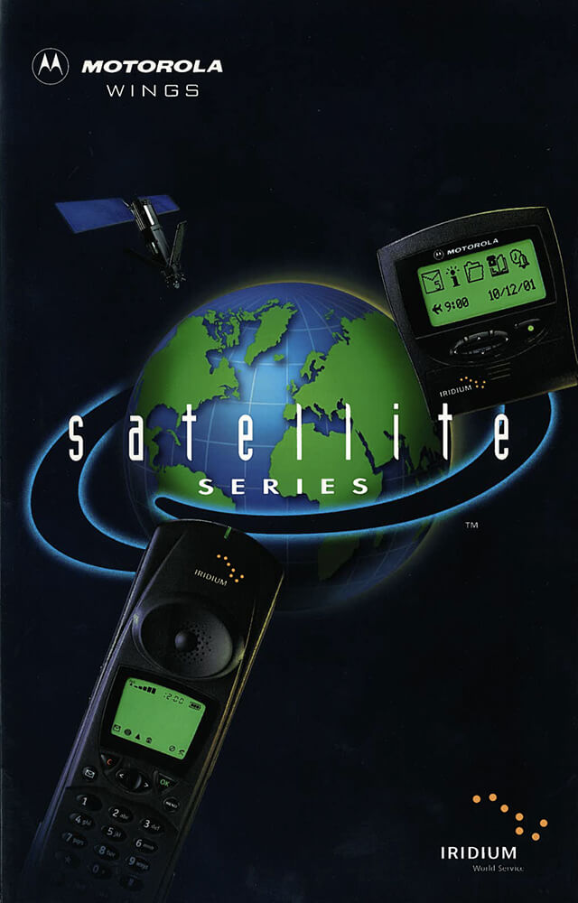
Motorola’s Iridium “Satellite Series”: the $3,000 handset (1999)
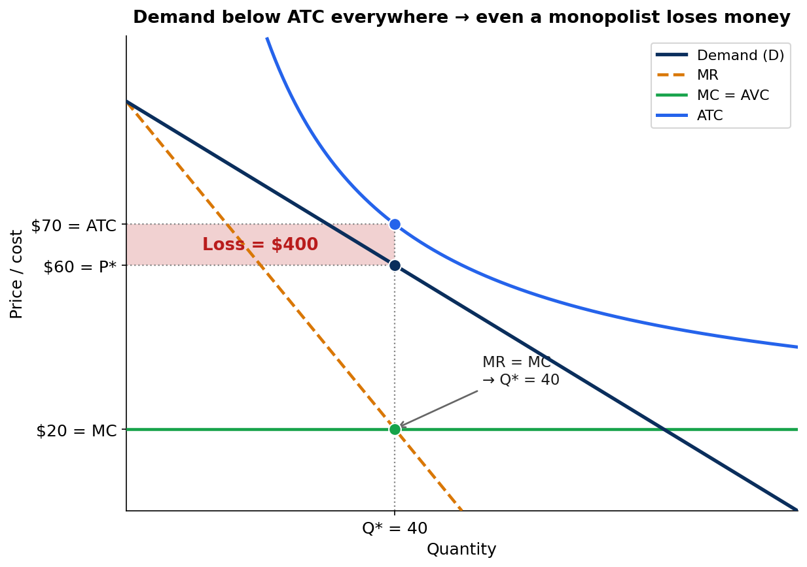
Iridium (1998): decades before SpaceX’s plan to sell phone service straight from satellites, Motorola built the only global satellite-phone network, for about $5 billion.
A $3,000 brick-sized handset, calls up to $7 a minute. Only about 10,000 subscribers, not the millions it needed. Bankrupt in 9 months.
Sole seller, zero rivals, and it still lost money: demand sat below ATC, so even MR = MC pricing could not cover cost. Long run: exit.
Read Demand Elasticity Off a Price Tag
Define the markup as a fraction of price — the Lerner index \(L = (P-MC)/P\). Substitute the FOC \(MR = MC\) and the inverse-elasticity form:
\(P\!\left(1 + \tfrac{1}{\varepsilon_D}\right) = MC \;\Rightarrow\; \dfrac{P-MC}{P} = -\dfrac{1}{\varepsilon_D}\)
The profit-maximizing markup is exactly the negative inverse of demand elasticity. It's local — it holds at the operating point — but there it's exact for any smooth demand, not just linear.
\(\varepsilon_D = -2 \Rightarrow L = 0.5\) (half the price is markup; \(P = 2MC\)). \(\varepsilon_D = -10\) (nearly a price-taker) \(\Rightarrow L = 0.1\). More elastic demand → smaller markup.
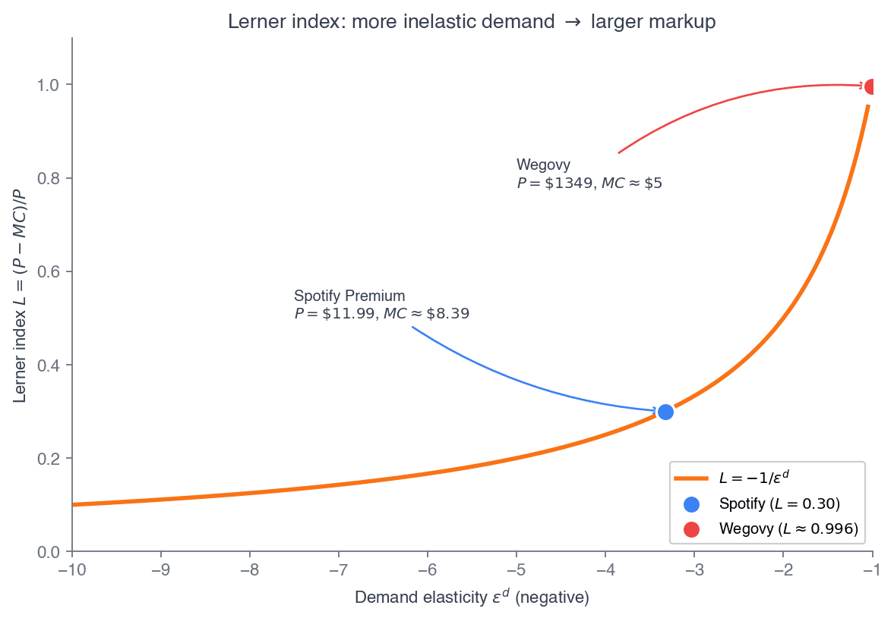
Fig 11.5 — markup \(L = -1/\varepsilon_D\); Spotify and Wegovy bracket the range.
Walkthrough 11.2 — Spotify Premium's Lerner Index
Problem. US Premium Individual lists at \(P = \$11.99\). Spotify says it pays nearly 70% of its music revenue to rights holders (labels, publishers, distributors); treat the per-subscriber royalty as \(MC\). Find \(L\), the implied \(\varepsilon_D\), and compare to academic estimates.
Published estimates for paid-streaming demand cluster in \(\varepsilon_D \in [-2.0, -1.4]\). At \(\varepsilon = -1.7\), the predicted markup is \(L = 0.588\) — far above Spotify's observed \(0.300\).
Check: \(|\!-\!3.33| > 1\) ✓ (elastic). The wedge is diagnostic, not a refutation — Heads Up 11.4 explains why.
Takeaway. A markup of 30% of Spotify's price (\(L = 0.30\)) implies demand elasticity \(-3.33\) — more elastic than published estimates. Either the firm isn't at the static profit-max FOC, or the simple model is missing something. The gap tells you where to look.
Heads Up 11.4 — Observed Markups May Diverge from \(-1/\varepsilon_D\)
\(L = -1/\varepsilon_D\) is what theory predicts if the firm sits at the static profit-max FOC. Real firms often don't, for at least five reasons:
1. List \(\ne\) effective price. Spotify's average revenue per user (ARPU) is ~€4.70 — about \$5.10 — far below the \$11.99 US list, because the base spans Family, Duo, Student, and cheap emerging-market plans. Compute \(L\) at ARPU and \(\varepsilon_D \approx -2.87\).
2. Free-tier substitution. Spotify's ad-supported free tier is an unusually cheap substitute. A churned subscriber often drops to Free, not to Apple Music — raising effective elasticity.
3. Competition from substitutes. Apple, Amazon, YouTube Music, Tidal, podcasts, and radio all bound the price. The "monopoly" framing is a residual-demand approximation — Ch 13 puts the rivals back in.
4. Dynamic pricing. Spotify trades static profit for user-base growth and lock-in. A firm pricing below its static optimum to grow looks like a low-Lerner outlier even if long-run profit is higher.
5. Strategic preemption. A high price invites entry; Spotify's committee forecasts competitor responses we don't see. Bottom line: the Lerner equation tells you what should hold under the simplifying assumptions — deviations are diagnostic, not refutations.
Market Power ≠ Market Share
The Lerner index \(L = -1/\varepsilon_D\) is set by elasticity (how replaceable you are), not by how big you are.
Cel-Ray, a celery soda with a sliver of the market, has no close substitute: half its price is markup. Coca-Cola dominates shelves but faces Pepsi and every store cola: \(L\) is only 0.24. Big share, less pricing power.
When MC Rises: Spotify Pays More per Subscriber
Background. Every Premium subscriber triggers royalty payments: Spotify says it pays nearly 70% of its music revenue to rights holders (a record $11 billion in 2025), and the US rate for songwriters and publishers steps up every year, to 15.35% of revenue by 2027. So the royalty cost per subscriber can rise; treat it as Spotify’s \(MC\). Illustrative demand: \(P = 16 - 0.08Q\) (\(Q\) = million subscribers), so \(MR = 16 - 0.16Q\).
4. Pass-through: price up $1 on a $2 cost rise, exactly half. With straight-line demand \(P = (a + c)/2\): \((16+8)/2 = 12 \to (16+10)/2 = 13\).
\(MC\uparrow \Rightarrow Q\downarrow,\ P\uparrow\), but by less than the cost rise: the higher price also loses subscribers. For comparison, Spotify raised US Premium from $11.99 to $12.99 in 2026.
When Demand Gets More Price-Sensitive
Demand rotates: buyers become more willing to walk away (more elastic). Who reacts?
(a) Price-taker
Flatter \(D_2\) through the same point: same \(P^*\), same \(Q^*\).
Real case, price-taker: generic USB-C cables online. Hundreds of sellers already price near cost, so when shoppers compare more and get more price-sensitive, the price has nowhere to fall: it stays at \(P = MC\).
Real case, price-maker: Wegovy, 2025. Once Zepbound and compounded copies gave cash-pay patients a substitute, demand got more elastic, and Novo cut the cash price to $499, then $349 a month.
A price-taker ignores demand’s shape: its price is already at \(MC\). A price-maker lives by it: more elastic demand shrinks the markup, the Cel-Ray vs Coca-Cola lesson. Same engine every time: MR = MC, then read \(P\) off demand.
Theory and Data 11.1 — The Rise of US Aggregate Markups
De Loecker–Eeckhout–Unger (2020, QJE)
Average markup of price over \(MC\) across US public firms rose from ~\$1.21 (1980) to ~\$1.61 (2016). In Lerner terms (\(L = (\text{markup}-1)/\text{markup}\)), the aggregate index roughly doubled, ~0.17 → ~0.38, over 36 years.
Concentrated in services, information, retail, and finance — the "superstar firm" story. Manufacturing rose only modestly.
Average markup P/MC, US public firms (1.0 = price equals MC); endpoints from De Loecker–Eeckhout–Unger (2020).
But the measurement is contested:
Bond et al. (2021): revenue-based \(MC\) estimates can be unidentified without quantity data — the trend may reflect input changes, not market power.
Raval (2023): markups from labor inputs vs materials inputs frequently disagree by large margins.
Two facts survive: markups vary enormously across industries (near 0 in agriculture to \(>0.85\) in patented pharma), and the distribution has spread out over time.
Walkthrough 11.4 — One Studio, Three Cities
Background. A boutique fitness chain is opening studios in New York, Boston and Philadelphia. Each class seat costs it \(MC = \$10\) (instructor pay, towels, cleaning). It hires an economics consultant, who estimates the price elasticity of demand in each city (illustrative): New York \(-1.5\), Boston \(-2\), Philadelphia \(-3\). Last piece of the puzzle: the best price in each city. Rule. \(L = \dfrac{P - MC}{P} = -\dfrac{1}{\varepsilon_D}\), so \(P = \dfrac{MC}{1 - L}\).
1. New York: \(L = 1/1.5 = 0.67\), so \(P = 10/(1 - 0.67) = \$30\).
4. Check the direction: same $10 cost, three prices. More elastic demand means a smaller markup and a lower price. Cost does not set the markup; elasticity does.
The consultant’s elasticities were the hard part; the pricing is one line. It works because a Philadelphia class can’t be resold in New York (Ch 12). Read backwards, the Lerner index turns observed markups into elasticities.
Poll #1 — Same Bottle, Same \(MC\). Who Charges More?
The same bottle of water costs the seller \(MC = \$1\) in both places. A: an airport shop past security, where you cannot walk to another store (\(\varepsilon_D = -1.5\)). B: a supermarket with rivals down the street (\(\varepsilon_D = -4\)). Which seller sets the higher markup over marginal cost?
A) The airport shop (\(\varepsilon_D = -1.5\))
B) The supermarket (\(\varepsilon_D = -4\))
C) Same markup — \(MC\) is equal
D) Can't tell without the demand intercepts
60 sec to vote
Answer: A — the airport shop charges more
The Lerner index depends only on elasticity: \(L = -1/\varepsilon_D\). Less elastic demand → bigger markup.
The Units That Never Trade: DWL = ½ × Height × Base
Ch 10: the competitive \(Q_C\) maximizes total surplus. A monopolist sets \(MR = MC\) instead of \(P = MC\), so \(Q_M < Q_C\). The units between them are worth more to buyers than they cost, yet never trade. That lost surplus is the deadweight loss:
Height: how far the price sits above marginal cost at \(Q_M\). Base: the units a competitive market would still sell.
Recall from Principles — 1116 §11.3
"The Welfare Cost of Monopoly" drew the same triangle between demand and \(MC\), from \(Q_M\) to \(Q_C\).
Same triangle as the tax DWL in Ch 3 and the burger chain in Ch 10: when demand and \(MC\) are straight lines, the triangle is the exact loss. Next: the Fluff numbers.
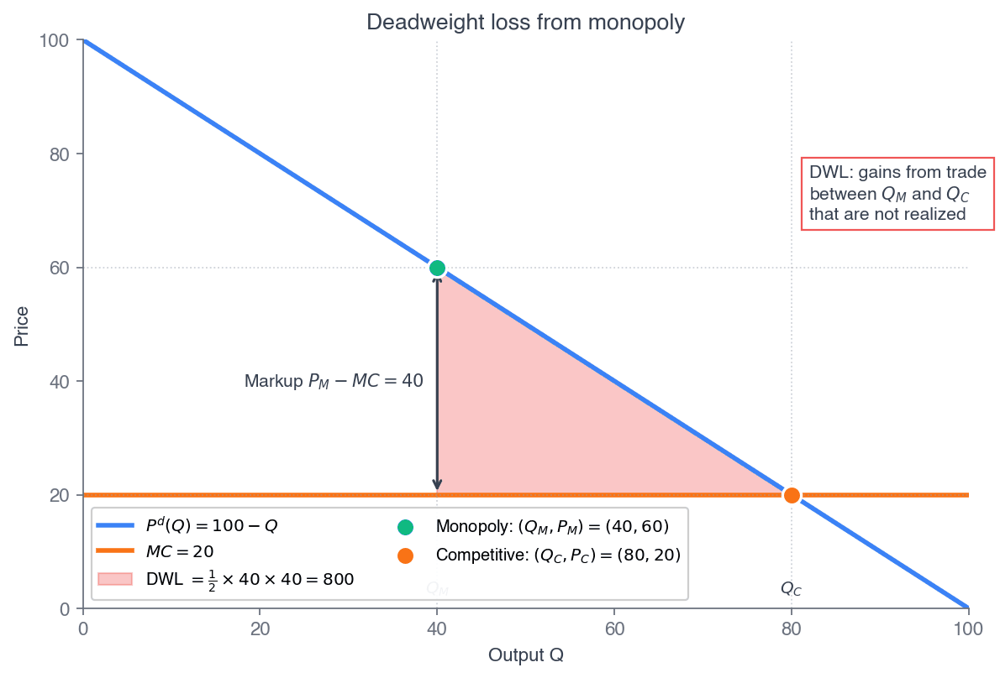
Fig 11.4 — the Harberger triangle between \(Q_M\) and \(Q_C\).
Walkthrough 11.1 (Part 3) — When Copies Arrive
Background. Fluff’s trademark protects its name, not its recipe: anyone may sell marshmallow creme under another name. Same market: \(P = 5 - 0.025Q\) thousand jars a week, \(MC = \$1\). Suppose at first Fluff is the only creme on the shelf: 80K jars at \$3 (Part 2). Then copies arrive (store brands, Kraft’s Jet-Puffed), and buyers treat them as the same thing. Problem. (1) Before copies, who gets what? (2) What surplus is lost? (3) Once copies arrive, the new \(Q\) and \(P\)? (4) Consumer surplus then?Photo: Scout123mh, CC BY-SA 3.0, Wikimedia Commons
1. Only creme on the shelf: buyers keep \(A = \tfrac12 (5 - 3)(80) = \$80\)K; the firm takes \(B = (3 - 1)(80) = \$160\)K a week.
2. Lost surplus: jars from 80K to 160K are worth more than \$1 but never made: \(C = \tfrac12 (3 - 1)(160 - 80) = \$80\)K.
3. Copies arrive: nothing blocks the recipe, so entry drives \(P\) to \(MC\): \(5 - 0.025Q = 1 \Rightarrow Q_C = 160\)K jars at \$1.
4. After copies: \(CS = \tfrac12 (5 - 1)(160) = \$320\)K \(= A + B + C\); profit is 0.
A trademark guards the name, not the market: copies hand B back to buyers and recover C. In practice the Fluff name still earns a little more than store brands: a differentiated product, Ch 13.
Walkthrough 11.5 — DWL with Rising \(MC\): Still a Triangle
Background. One company runs the only car ferry to a small island. Demand for crossings is \(P = 100 - Q\) dollars per car (\(Q\) = car crossings a day). Its marginal cost rises with traffic, because extra cars mean crew overtime and extra runs: \(MC = 20 + 0.1q\). Problem. Find \(Q_M\) and \(P_M\), the competitive \(Q_C\), and the deadweight loss.
3. Height at \(Q_M\): \(P_M - MC(Q_M) = 61.90 - 23.81 = \$38.10\), not \(P_M - P_C\).
4. Base: \(Q_C - Q_M = 72.73 - 38.10 = 34.63\) crossings that never happen.
5. Deadweight loss: \(\tfrac12 (34.63)(38.10) = \$659.66\) a day. Keep \(80/1.1\) and \(80/2.1\) unrounded: rounding first gives \$659.70.
Rising \(MC\) does not change the method. Demand and \(MC\) are both straight lines, so the gap between them shrinks in a straight line from \$38.10 at \(Q_M\) to zero at \(Q_C\): the lost surplus is exactly a triangle.
Theory and Data 11.2 — How Big Is the Welfare Cost of US Monopoly?
Harberger added up one deadweight-loss triangle per industry and concluded monopoly was a nuisance, not a macro problem. Modern whole-economy models — ones that let firms differ from each other — put the cost 50–100× higher. Same phenomenon, wildly different verdict.
Where does the gap come from? A triangle counts the trades lost in one market. Markups bend the whole economy two ways it can’t see.
1 · The wrong firms get the workers. A bigger markup means a firm cuts output further below the efficient level — so it hires fewer workers than it should, and they end up at low-markup firms instead. Same inputs, less output. It is the spread in markups that hurts, and one industry’s triangle can’t see a spread.
2 · Markups tax working. If everything is priced above \(MC\), your wage buys less than your hour produced — so people work less and buy less. An economy-wide sales tax nobody collects.
Harberger asks how many trades this market lost. The modern models ask how much smaller the whole economy is.
Cost of market power · 1 of 3 · deadweight loss Apple’s 30% Cut: The Loss You Can’t See
The App Store is the only way to sell to an iPhone user. Hosting one more app costs Apple almost nothing, yet it keeps 30% of every sale: a wedge, like a sales tax.
1. Without the cut: developers make apps until buyers’ value meets their cost.
2. Apple takes 30%: the buyer pays $1, the developer keeps 70¢. Every app now needs a higher price to cover its cost.
3. Fewer apps: fewer apps launch, at a higher price, and Apple collects the wedge on each one: the orange rectangle.
4. Deadweight loss: apps buyers value above their cost, but not by enough to cover the 30%, never launch: the red triangle.
This loss is invisible: you only see it in what is missing, the app or startup that was never built. (Curves illustrative.)
Cost of market power · 2 of 3 · rent-seeking Rent-Seeking: Spending to Stay on Top
Rent-seeking: using real resources (lobbying, lawsuits, political influence) to capture wealth without creating any.
The profit rectangle B is the prize. A firm will spend up to B to win or keep it, and that spending builds nothing: society can lose B as well as the triangle C.
~$70M
Top-5 US tech firms’ federal lobbying, 2025 (Meta, Amazon, Microsoft, Google, Apple)
€151M
EU digital-industry lobbying, 2025, up 33% on 2023, much of it aimed at the Digital Markets Act
Meta alone kept about 87 lobbyists in Washington, one for every six members of Congress.
Same picture as Walkthrough 11.1: A to buyers, B to the firm, C lost.
Cost of market power · 2 of 3 · rent-seeking Rent-Seeking in Our Airport Case
“Bill: No more airport. For a better environment.”
Remember the only airline to the island (slide 18). A second airport would let rival airlines in. So the airline funds a campaign for a bill: no new airport, for the environment.
The green label may even be sincere, but the payoff is private: no rivals, so the high fares stay. Money spent fighting competition, not serving flyers.
Rent-seeking often wears a public-interest label. Ask who gains if the rule passes.
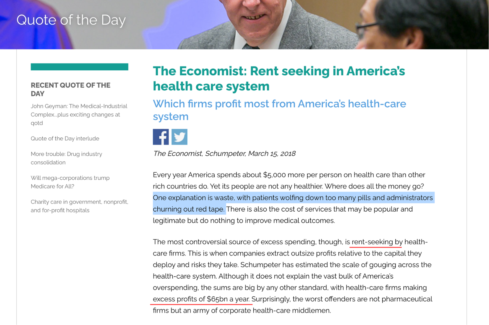
The Economist (2018): US health-care firms extract about $65bn a year in rent-seeking excess profit.
Cost of market power · 3 of 3 · X-inefficiency X-Inefficiency: No Pressure to Be Sharp
X-inefficiency — operating above minimum cost because no competitor forces you to be efficient.
Competition is a discipline. Remove it, and the firm drifts off its own cost curve — into overstaffing, bloat, and slack a rival would never allow.
One face of it: a CEO’s \$6,000 shower curtain (Tyco, Kozlowski).
Cost of market power · 3 of 3 · X-inefficiency Slack at the Top: Tyco’s $6,000 Shower Curtain
Dennis Kozlowski, CEO of Tyco International, threw a $2 million birthday party for his wife and bought a $6,000 shower curtain. With no rival forcing discipline, slack like this goes unchecked: cost that serves no customer.
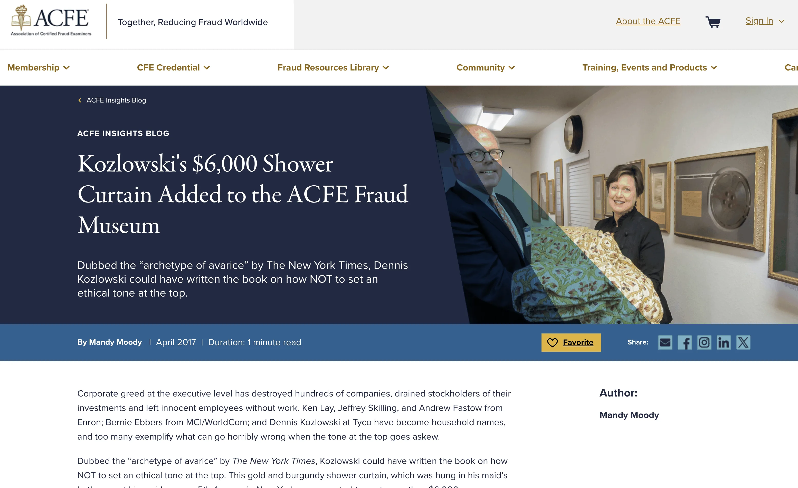
The curtain now sits in the ACFE Fraud Museum.
Case for market power · 1 of 3 · innovation Monopolies and the Incentive for Innovation
Potential benefit of monopolies: the prospect of monopoly profit — protected by patents & copyrights — can incentivize firms to invest in research & development,
leading to new products and technologies a zero-profit competitive firm could never fund.
Case for market power · 2 of 3 · differentiation Perfect Competition → A Local Monopoly
50 near-identical burger joints in a three-mile radius — until one differentiates.
Fifty price-takers selling the same patty — one plates something else.
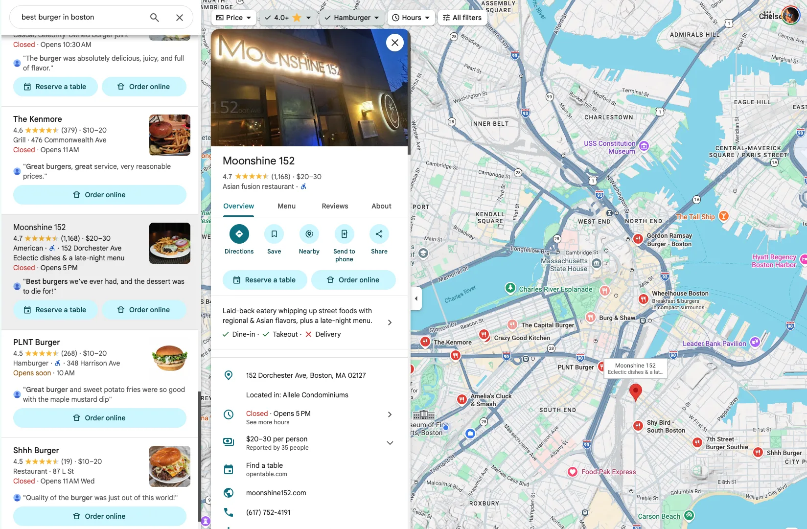
Search “best burger in Boston” — Moonshine 152, 4.7★ (1,168), $20–30 while the crowd sits at $10–20.
Innovation & differentiation are how a firm escapes the zero-profit crowd and carves out market power — the prize that motivates the effort.
Case for market power · 3 of 3 · scale Economies of Scale — Universal Service
Often criticized for inefficiency — yet one scaled network does what a fragmented market won’t: reach everyone.
The USPS will carry a letter to any address — Hawaii, Alaska, Guam, even a carrier at sea — for the price of a single stamp.
Access at one price: rural Alaska pays the same stamp as across town. Private carriers price by cost instead: UPS and FedEx add delivery-area surcharges for remote ZIP codes. A private solution will not give everyone access at one price.
Weighing it up · the ledger The Innovation Defense: Costs vs Benefits
Costs of market power
Deadweight loss: apps that never launch under Apple’s 30%. (slide 42)
Rent-seeking: about $70M a year of tech lobbying; “no new airport” bills. (slide 43)
X-inefficiency: slack nobody disciplines, down to a $6,000 shower curtain. (slide 44)
Case for market power
Innovation: the patent prize funds R&D a zero-profit firm cannot. (slide 45)
Differentiation: the burger that stands out earns a local monopoly. (45.2)
Scale: one network reaches every address for one stamp. (45.3)
EvaluateDeadweight loss is a cost today; the innovation it funds is a benefit tomorrow. Which wins? The defense is strongest when the monopoly is temporary, as with a 20-year patent.
§11.7
Natural Monopoly
When the cost function itself forces one firm: \(c(Q) \le \sum_i c(q_i)\)
Natural Monopoly — One Set of Pipes
Some markets are cheapest served by one firm. Building a second gas, water, or power network wastes enormous fixed cost — a natural monopoly. That’s why we regulate utilities instead of forcing competition.
When the Math of Cost Forces One Firm
1. A fact about cost: one firm can make \(Q\) more cheaply than any split of it: \(c(Q) \le \sum_i c(q_i)\) (subadditivity).
2. The usual recipe: a big fixed cost \(F\) plus a constant \(MC\), so \(ATC = F/q + MC\) falls at every \(q\).
3. Check it, \(c(q) = 100 + 5q\): one firm makes 20 for \(100 + 100 = \$200\); two firms making 10 each pay \(2(100 + 50) = \$300\). The $100 gap is \(F\), paid twice.
4. No competitive resting point: \(ATC = 100/q + 5\) keeps falling toward $5 and never turns up, so \(p = \min ATC\) never happens: the free-entry logic of Ch 10 fails.
Heads Up 11.5: a cost story, not a size story. A small market is a natural monopoly when fixed cost is large relative to demand. “Monopoly” (one firm exists) ≠ “natural monopoly” (one firm is cheapest).
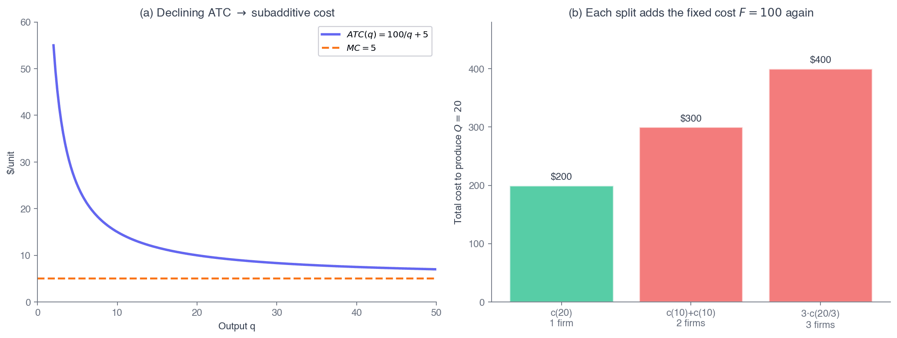
Fig 11.6 — declining \(ATC\): one firm always undercuts two.
Case Study — Starlink: When Free Entry Can't Happen
Different technology → different cost curves: a gas peaker's \(MC\) rises steeply; Starlink's \(MC \approx 0\) is nearly flat. Push that to the limit — a huge fixed cost with \(MC \approx 0\) means \(LRATC\) keeps falling, so a second entrant expects a loss and the market tips to a natural monopoly.
\$10B
Sunk cost — satellites + rockets
10M
Subscribers (Feb 2026)
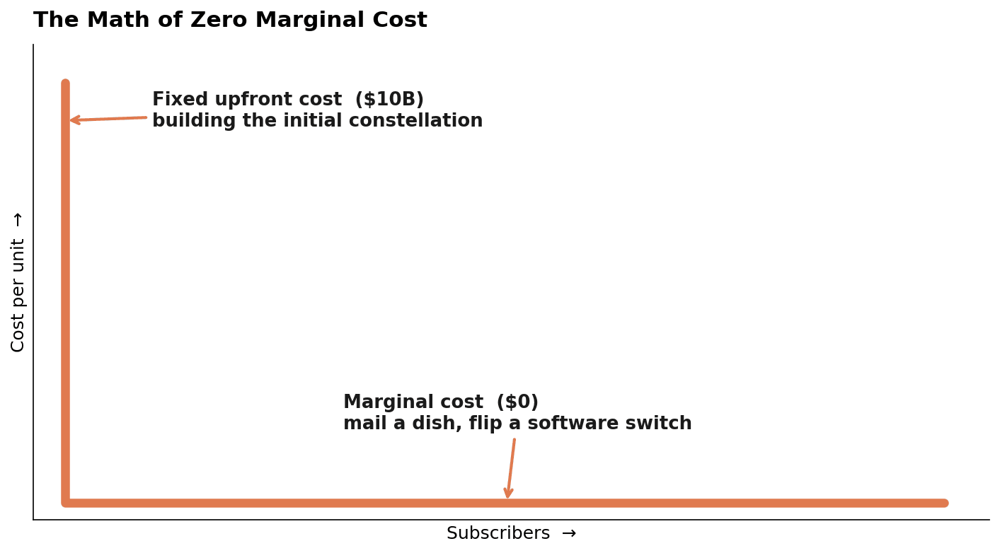
The rival's dilemma: a competitor also sinks ~\$10B. Split the customers and at most one constellation covers its \$10B, so a second entrant expects a loss. The cost curve leaves room for one firm — a natural monopoly.
Who Does Starlink Actually Take?
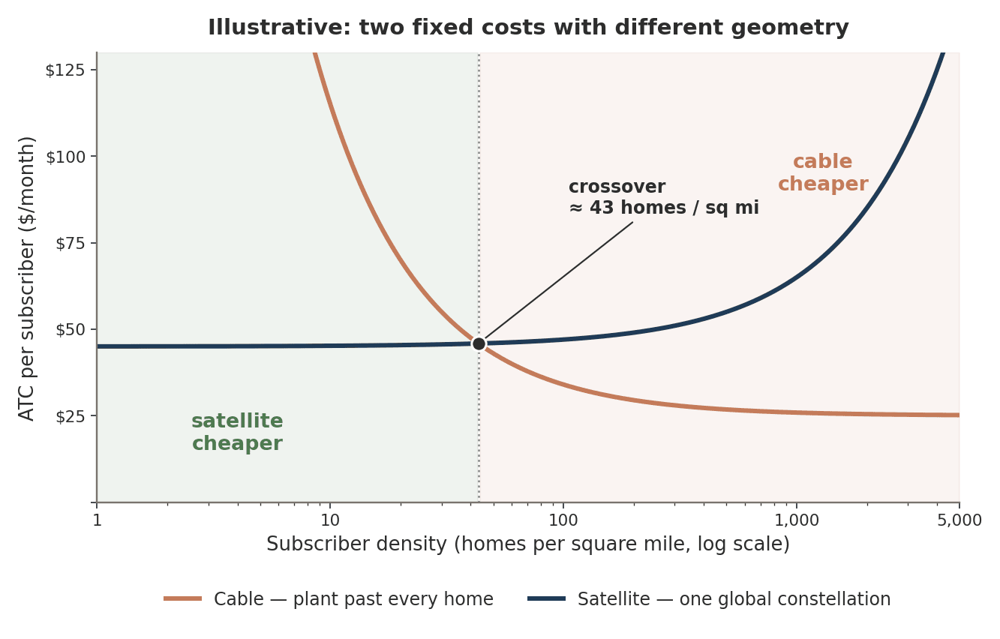
Model, not reported data — neither SpaceX nor the cable operators publish per-subscriber ATC. The shape is the content.
① The share → ATC loop is real. With \(MC \approx 0\), \(ATC \approx F/Q\): every new subscriber spreads the same constellation over one more head. Lower ATC → lower price → more share → lower ATC. That feedback is the natural-monopoly engine.
② But \(MC \approx 0\) only while the cell has slack. Capacity is shared per geographic cell, so in a crowded one an extra subscriber slows everyone — a genuine marginal cost. Charter's CEO: Starlink is "too capacity constrained to be a serious threat in urban and suburban markets."
③ Same label, different geometry. Cable's fixed cost is plant past every home, so its ATC falls with density. Starlink's is one constellation — global, geography-blind. Hence the crossover: Starlink takes the thin edge of the map, not the cities.
④ Direct-to-cell — buying the barrier. The FCC approved SpaceX's purchase of ~65 MHz of EchoStar spectrum on 12 May 2026 (AWS-3/AWS-4/H-block, \$2.4B escrow), its first exclusive nationwide spectrum for direct-to-device — a claimed 100× capacity gain. Note what was bought: not a cost advantage, a licence a rival cannot replicate — a barrier to entry, in the wild.
10M+
Starlink subscribers worldwide (2026)
15.5M
T-Mobile + Verizon fixed-wireless subs — terrestrial, so it works where cells are dense
−280K
US cable broadband subs, Q1 2026 (was −320K) — mostly to fibre and fixed wireless
Careful with the arrow of causation. Cable is losing subscribers, but not mainly to Starlink — the substitute doing the damage is terrestrial fixed wireless, which thrives in exactly the dense areas where a satellite cell congests. The cost geometry in the figure predicted that.
Calculus Corner 11.3 — Subadditivity and the Failure of \(p = \min ATC\)
For \(c(q) = F + \mu q\), split \(Q\) across \(n\) firms:
\(\min ATC\) does not exist on \((0, \infty)\): \(ATC\) declines forever, approaching \(\mu\) only as \(q \to \infty\). There's no finite output where a competitive market can settle.
Chapter 10's free-entry condition \(p = \min LRATC\) fails. The cost function pushes the market toward concentration: one big firm pays \(ATC \to \mu\); many small firms each pay far more. The cost-minimizing structure is one firm — regardless of antitrust law.
Problem. A firm has \(c(q) = 100 + 5q\). (a) Verify subadditivity at \(Q = 20\): compare one firm producing all 20 against two firms producing 10 each — that is, check whether \(c(20) < c(10) + c(10)\). (b) Show \(ATC\) is everywhere declining. (c) Confirm \(p = \min ATC\) has no solution.
Set up & solve
One firm at \(Q=20\): \(c(20) = 100 + 100 = \$200\). Two firms at 10 each: \(2(100+50) = \$300\). \(200 < 300\) ✓ — saving \(= \$100 = F\).
General: \(\sum c(q_i) - c(Q) = (n-1)(100) > 0\) for any \(n > 1\). Subadditive everywhere.
\(\lim_{q\to\infty} ATC = 5\), never achieved at finite \(q\). So \(p = \min ATC\) has no finite solution — no competitive equilibrium exists.
Takeaway. Positive fixed cost + constant \(MC\) is the textbook recipe for natural monopoly. The competitive \(p = \min ATC\) has no solution; the market necessarily concentrates. Whatever the policy response, it must take this as given — which is §11.8.
§11.8
Regulation Tradeoffs
Three regimes for the natural monopolist: unregulated, \(p = MC\), \(p = ATC\)
Regulating the Natural Monopolist
Natural monopolies have economies of scale so large that one firm serves the whole market at lower cost than several could. You can’t just “add competition” — so policy must pick how to regulate:
1
Public ownership — the government owns and operates the monopoly. (e.g., municipal water)
2
Regulated private ownership — a private firm operates under government price & quantity limits. (e.g., the electric utility)
3
Franchise the right to operate — award the market to the firm offering the most competitive price and output.
Whichever path, the regulator’s real choice is the price it lets the monopolist charge — so the next question is: which price?
Regulating It: Price = MC or Price = ATC?
Unregulated: \(MR = MC\) gives a high price, a small quantity and a deadweight loss.
Marginal-cost pricing, \(P = MC\): no deadweight loss, the social optimum. But \(P < ATC\), so the firm loses its fixed cost and needs a subsidy: Amtrak’s federal money covers what fares do not.
Average-cost pricing, \(P = ATC\): the firm breaks even (a normal profit) with no subsidy. Price is a little higher and output a little lower, so a small deadweight loss remains.
In practice: rate-of-return rules or price caps. Either way the regulator must estimate demand and cost, which is hard.
Regulating the Natural Monopolist
Marginal-Cost Pricing Rule:set price = marginal cost (PC = MC, at point c) — socially optimal, but if price < ATC the firm runs a loss, so a government subsidy may be needed.
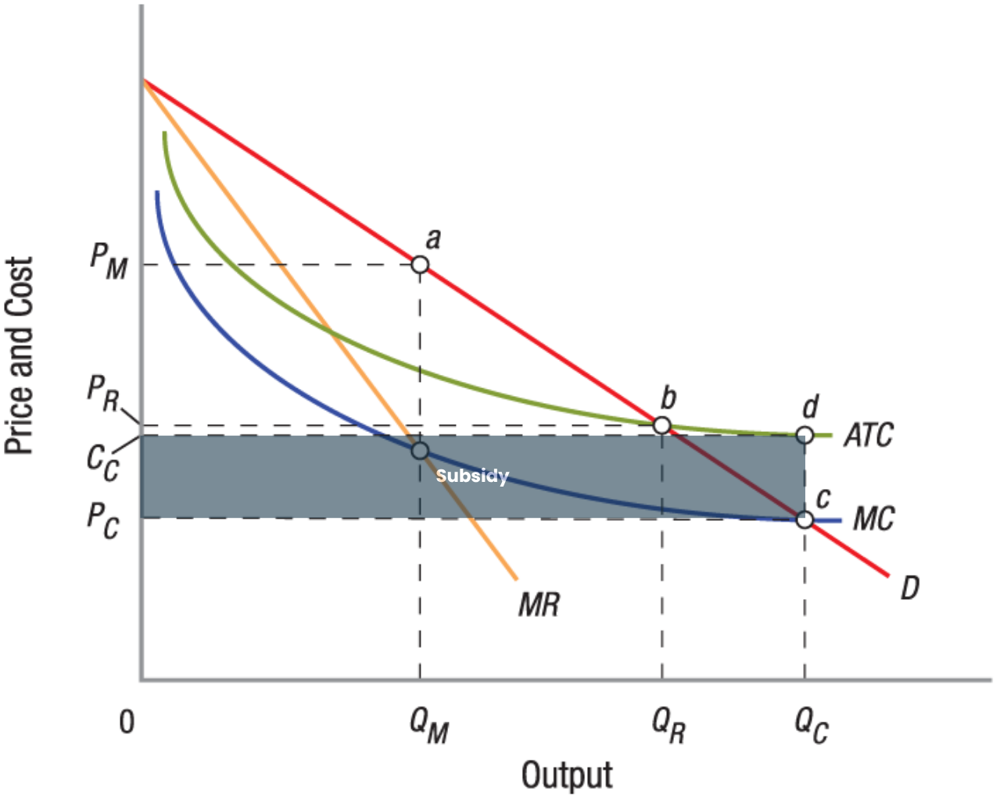
Amtrak shows the subsidy side: federal money covers what fares do not. Its fares are not set at MC; the point is who pays the gap between price and ATC.
Walkthrough 11.7 — The Island Water Company
Background. One company pipes water to the whole island. Laying the pipes costs \(F = 100\) and each extra unit costs 5, so \(c(q) = 100 + 5q\) ($ thousands a month, \(q\) = millions of gallons). Demand is \(P = 50 - Q\). The island council must choose: leave it alone, cap the price at \(MC\), or cap it at \(ATC\). Problem. Compare \(Q\), \(P\), profit and deadweight loss. Try the cap yourself.
Price capnone(drag the handle by the price axis)
Regime
\(Q\)
\(P\)
profit
DWL
(i) No cap, \(MR=MC\)
22.5
$27.5
$406
$253
(ii) Cap \(p = MC = 5\)
45
$5
−$100
$0
(iii) Cap \(p = ATC\)
42.66
$7.34
$0
$2.75
(iii) solves \(5 + 100/Q = 50 - Q\), i.e. \(Q^2 - 45Q + 100 = 0\); the consumer-friendly root is \(Q = 42.66\), \(p = \$7.34\).
The \(ATC\) cap removes \(250.38/253.13 = \mathbf{98.9\%}\) of the monopoly DWL and the company still pays its own way. The \(MC\) cap is first-best (zero DWL) but needs a $100 subsidy, the way federal money covers what Amtrak’s fares do not.
Regulation in the Wild: PG&E, and Software Where \(MC \approx 0\)
PG&E: average-cost pricing for real
California’s 2023 rate case, yearly revenue
The rule: price must cover operating cost + depreciation + a fair return (about 10%) on the firm’s capital. That is the \(P = ATC\) cap of Walkthrough 11.7.
The trap (Averch–Johnson): allowed profit grows with capital, so the utility over-invests. That pushed the UK, Australia and the EU to price caps instead.
Microsoft 365 & Adobe: \(MC \approx 0\)
One more licence costs about nothing, so the markup \(L\) heads toward 1
The prices: Office 365 E3 went from $23 to $26 per user a month (July 2026); Adobe moved customers to pricier Creative Cloud Pro.
Why buyers pay: switching costs (file formats, retraining) make demand inelastic. Measured markups sit 0.7–0.9, not 1, because support and hosting are not free.
… and after AI? Every Copilot answer burns GPU time, so \(MC > 0\) again. Microsoft sells Copilot as a $30/user/month add-on; Adobe meters it with Firefly credits. Metering is what you do when \(MC > 0\): expect lower markups and two-part tariffs (Ch 12).
§11.9
When Entry Barriers Fall
Generic drugs and low-cost airlines: how fast monopoly power ends
Walkthrough 11.8 — Truvada: Monopoly to Generics
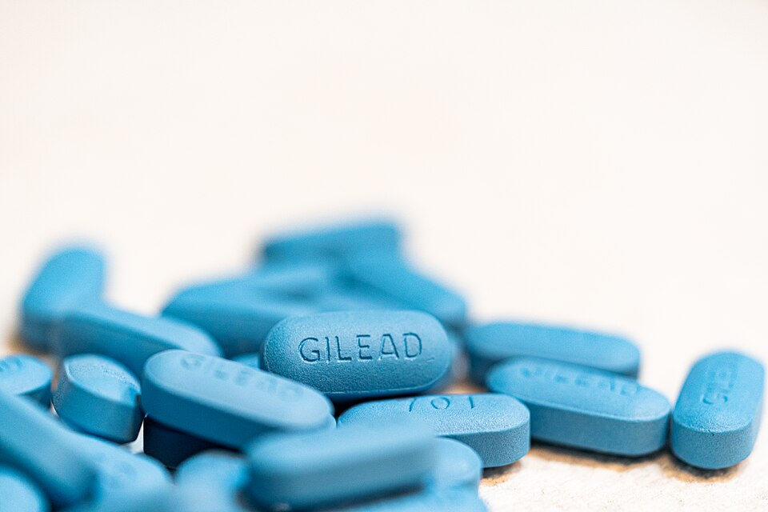
Photo: Tony Webster, CC BY-SA 2.0, Wikimedia Commons
Background. Gilead’s Truvada prevents HIV infection (PrEP). Under patent it listed near $1,600 a month, while a month of pills costs about $50 to make. In October 2020 Teva launched the first generic; within about a year, with several makers, the price was near $50. Problem. Compute the Lerner index before and after entry. Who gains?
1. Patent years: \(L_1 = (1600 - 50)/1600 = 0.969\), so \(\varepsilon_D = -1/0.969 = -1.03\): patients had no close substitute.
2. After generics: \(L_2 = (50 - 50)/50 = 0\): several sellers of the same pill compete the price down to \(MC\) (Bertrand, Ch 13).
3. Who gains: the $1,550 per patient per month that was monopoly profit becomes consumer surplus, and patients who were priced out start taking it.
Patent length is a deliberate trade-off: longer patents fund more R&D but keep the deadweight loss longer. When the patent ends, the competitive outcome returns within about a year.
Heads Up 11.6, Coase conjecture: a durable-goods monopolist that can’t commit may be pushed toward \(p = MC\) anyway, because buyers wait for price cuts. Hence leasing, planned obsolescence and subscriptions.
When entry barriers fall · airlines Low-Cost Airlines Break Market Power
When ultra-low-cost carriers (Spirit, which shut down in 2026, Frontier, Ryanair) enter an airport, the incumbents’ market power cracks: the cycle from the ledger, run in real life. It is exactly what the “no new airport” bill (43.2) was trying to stop.
The low-cost playbook
Cut costs to the bone (one aircraft type, fees for extras, packed seats), then undercut the incumbents’ fares on their own routes.
Prices fall, quantity rises. The five US airports with the biggest fare drops all gained new or expanded low-cost service, and more passengers flew those routes: a move down demand toward the competitive point.
When entry barriers fall · airlines Low-Cost Airlines: The Consumer Trade-Off
Spirit: the US ultra-low-cost model (shut down May 2026)
Passengers accept: fewer extras: bag fees, no free snacks, less legroom.
Ryanair: Europe’s low-cost pioneer (photo: Alf van Beem, public domain, Wikimedia Commons)
Passengers gain: fares lower than ever, so far more people can fly at all.
Net: consumer surplus rises. The cut extras are a real cost, but for most flyers the fare savings are bigger, and travel opens up to people who could not afford it before.
Chapter Summary
Market power
A downward-sloping residual demand, \(P'(q) < 0\). Selling more lowers price on all units — the source of \(MR < P\).
Marginal revenue
\(MR = P(1 + 1/\varepsilon_D)\). Linear demand: same intercept, twice the slope. FOC: \(MR = MC\).
Lerner index ★
\(L = (P-MC)/P = -1/\varepsilon_D\). The Lerner index is \(-1/\varepsilon_D\) — the central empirical tool.
Deadweight loss
\(Q_M < Q_C\) makes a Harberger triangle. Triangles summed by industry: ~0.1% of GNP (Harberger 1954) → 5–10% of consumption in whole-economy models (EMX 2023).
Natural monopoly
Subadditive cost (\(F + \mu q\)) → declining \(ATC\), no \(\min ATC\). In W11.7, \(ATC\) pricing removes 98.9% of DWL, no subsidy.
Spotify ↔ Wegovy
\(L = 0.30\) (\(\varepsilon=-3.33\)) to \(L = 0.996\) (\(\varepsilon=-1.004\)) bracket the realistic range.
Why \$11.99? Because \(MR = MC\), and the markup it implies is \(-1/\varepsilon_D\). The Spotify thread continues: Chapter 12 lets the firm charge different prices to different groups — Student, Duo, Family, Premium.
Coming Up — Chapter 12: Pricing with Market Power
Today the monopolist charged one price to everyone. Chapter 12 relaxes that — and the same firm starts charging different prices to different groups.
Third-degree price discrimination: set \(MR_i = MC\) in each segment \(i\) \(\Rightarrow\) \(L_i = -1/\varepsilon_i\)
The Lerner index, per segment: charge a higher markup where demand is less elastic — Student vs Family.
Two-part tariffs: a fixed fee plus a per-unit price — set \(p = MC\), extract surplus through the fee.
Bundling: when does selling Word + Excel together beat selling them separately?
Before Chapter 12: read manuscript §12.1–§12.3. The Spotify Premium portfolio — Student \$6.99, Duo \$18.99, Family \$21.99 — is price discrimination in plain sight.